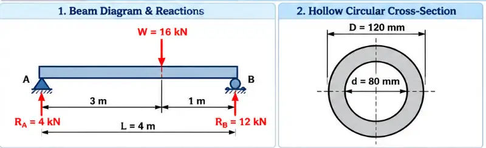
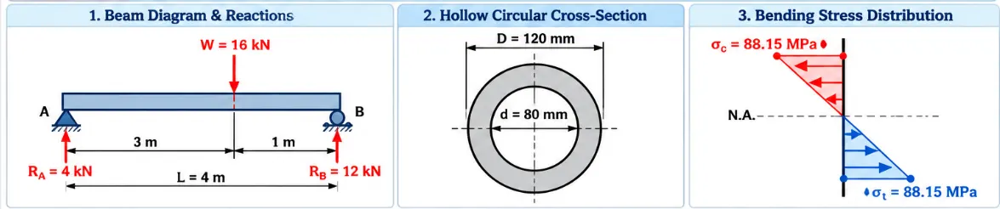
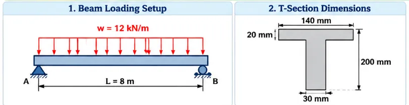
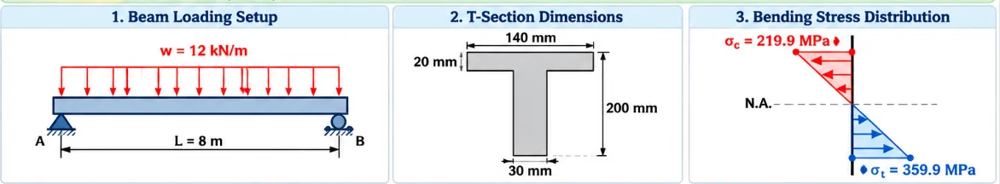
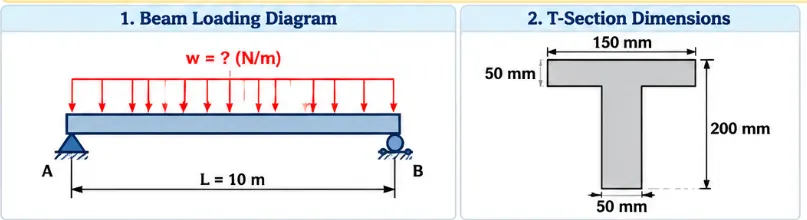
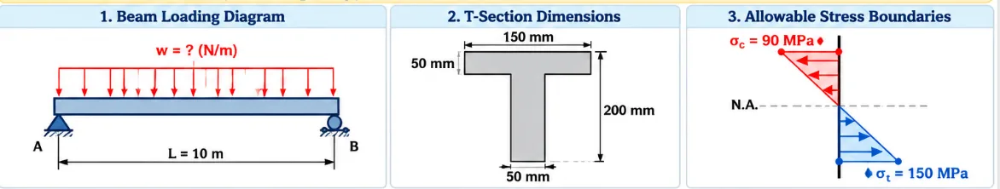
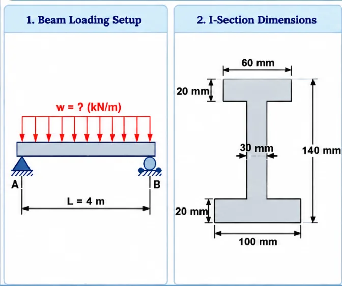
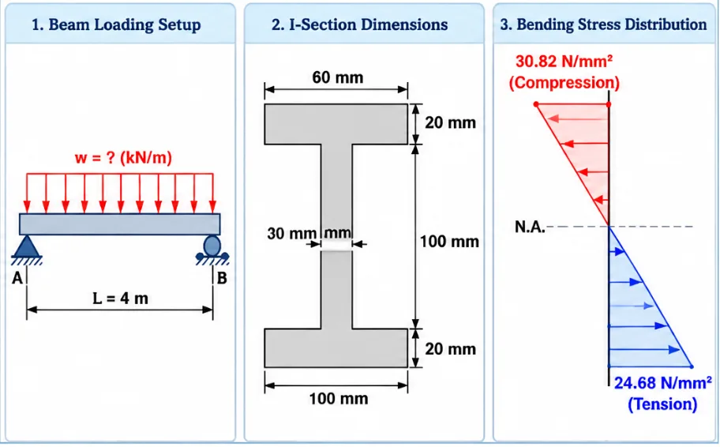

$$M_{\max} = \frac{W \cdot a \cdot b}{L} = \frac{16 \times 3 \times 1}{4} = 12\text{ kN}\cdot\text{m}$$
$$M_{\max} = 12 \times 10^6\text{ N}\cdot\text{mm}$$
$$I = \frac{\pi}{64}(D^4 - d^4) = \frac{\pi}{64}(120^4 - 80^4)$$
$$I = 8.168 \times 10^6\text{ mm}^4$$
$$y = \frac{D}{2} = 60\text{ mm}$$
$$\sigma_{\max} = \frac{M_{\max} \cdot y}{I} = \frac{12 \times 10^6 \times 60}{8.168 \times 10^6}$$
$$\sigma_{\max} = 88.15\text{ N/mm}^2\text{ (MPa)}$$


| Part No. | Area \(A\) (\(\text{mm}^2\)) | \(y\) from bottom (\(\text{mm}\)) | \(A y\) (\(\text{mm}^3\)) | \(h = |y - \bar{y}|\) (\(\text{mm}\)) | \(I_0 + A h^2\) (\(\text{mm}^4\)) |
|---|---|---|---|---|---|
| 1 (Web) | \(30 \times 180 = 5400\) | \(90\) | \(486,000\) | \(34.15\) | $$20.88 \times 10^6$$ |
| 2 (Flange) | \(140 \times 20 = 2800\) | \(190\) | \(532,000\) | \(65.85\) | $$12.24 \times 10^6$$ |
| Total | \(A = 8200\) | — | \(\sum Ay = 1,018,000\) | — | \(I = 33.11 \times 10^6\text{ mm}^4\) |
$$\bar{y} = \frac{\sum A y}{A} = \frac{1,018,000}{8200} = 124.15\text{ mm}$$
$$y_{\text{top}} = 75.85\text{ mm},\quad y_{\text{bottom}} = 124.15\text{ mm}$$
$$M_{\max} = \frac{w L^2}{8} = \frac{12 \times 8^2}{8} = 96\text{ kN}\cdot\text{m}$$
$$M_{\max} = 96 \times 10^6\text{ N}\cdot\text{mm}$$
$$\sigma_c = \frac{M \cdot y_{\text{top}}}{I} = \frac{96 \times 10^6 \times 75.85}{33.11 \times 10^6} = 219.9\text{ MPa}$$
$$\sigma_t = \frac{M \cdot y_{\text{bottom}}}{I} = \frac{96 \times 10^6 \times 124.15}{33.11 \times 10^6} = 359.9\text{ MPa}$$


| Part No. | Area \(A\) (\(\text{mm}^2\)) | \(y\) from bottom (\(\text{mm}\)) | \(A y\) (\(\text{mm}^3\)) | \(h = |y - \bar{y}|\) (\(\text{mm}\)) | \(I_0 + A h^2\) (\(\text{mm}^4\)) |
|---|---|---|---|---|---|
| 1 (Web) | \(50 \times 150 = 7500\) | \(75\) | \(562,500\) | \(50\) | $$32.8125 \times 10^6$$ |
| 2 (Flange) | \(150 \times 50 = 7500\) | \(175\) | \(1,312,500\) | \(50\) | $$20.3125 \times 10^6$$ |
| Total | \(A = 15,000\) | — | \(\sum Ay = 1,875,000\) | — | \(I = 53.125 \times 10^6\text{ mm}^4\) |
$$\bar{y} = \frac{1,875,000}{15,000} = 125\text{ mm}$$
$$y_{\text{bottom}} = 125\text{ mm},\quad y_{\text{top}} = 75\text{ mm}$$
$$M_t = \frac{I \cdot \sigma_t}{y_{\text{bottom}}} = \frac{53.125 \times 10^6 \times 150}{125} = 63.75\text{ kNm}$$
$$M_c = \frac{I \cdot \sigma_c}{y_{\text{top}}} = \frac{53.125 \times 10^6 \times 220}{75} = 155.83\text{ kNm}$$
Governing \(M_{\text{allow}} = 63.75\text{ kN}\cdot\text{m}\)
$$M_{\max} = \frac{w L^2}{8}$$
$$63.75 \times 10^6 = \frac{w(10000)^2}{8}$$
$$w = 5100\text{ N/m} = 5.1\text{ kN/m}$$


| Part No. | Area \(A\) (\(\text{mm}^2\)) | \(y\) from bottom (\(\text{mm}\)) | \(A y\) (\(\text{mm}^3\)) | \(h = |y - \bar{y}|\) (\(\text{mm}\)) | \(I_0 + A h^2\) (\(\text{mm}^4\)) |
|---|---|---|---|---|---|
| 1 (Bottom Flange) | \(100 \times 20 = 2000\) | \(10\) | \(20,000\) | \(52.26\) | $$5.528 \times 10^6$$ |
| 2 (Web) | \(30 \times 100 = 3000\) | \(70\) | \(210,000\) | \(7.74\) | $$2.680 \times 10^6$$ |
| 3 (Top Flange) | \(60 \times 20 = 1200\) | \(130\) | \(156,000\) | \(67.74\) | $$5.547 \times 10^6$$ |
| Total | \(A = 6200\) | — | \(\sum Ay = 386,000\) | — | \(I = 13.755 \times 10^6\text{ mm}^4\) |
$$\bar{y} = \frac{386,000}{6200} = 62.26\text{ mm}$$
$$y_{\text{top}} = 140 - 62.26 = 77.74\text{ mm}$$
Top fiber is farther from N.A., so compression governs:
$$M_{\text{allow}} = \frac{\sigma_{\text{allow}} \cdot I}{y_{\text{top}}} = \frac{30.82 \times 13.755 \times 10^6}{77.74}$$
$$M_{\text{allow}} = 5.453 \times 10^6\text{ N}\cdot\text{mm}$$
$$w = \frac{8 M_{\text{allow}}}{L^2} = \frac{8 \times 5.453 \times 10^6}{(4000)^2}$$
$$w = 2.726\text{ N/mm} = 2.726\text{ kN/m}$$
